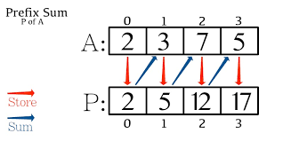

Prefix Sum

In computer science, the prefix sum, cumulative sum, inclusive scan, or simply scan of a sequence of numbers x0, x1, x2, ... is a second sequence of numbers y0, y1, y2, ..., the sums of prefixes (running totals) of the input sequence:
y0 = x0
y1 = x0 + x1
y2 = x0 + x1+ x2
...
We can quickly calculate range operation, for example, sum [2:5] = prefix[5] - prefix[2-1]
Generate prefix sum array
import Foundation
let arr : [Int] = [1,6,4,2,5,3]
let prefix = create_prefix(arr)
print(prefix) // [0, 1, 7, 11, 13, 18, 21]
func create_prefix(_ arr : [Int]) -> [Int] {
var prefix = Array(repeating: 0, count: arr.count+1)
for i in 0..<arr.count {
prefix[i+1] = prefix[i] + arr[i]
}
return prefix
}
// Let say we want the sum from range a to b
// the formular is : prefix[b] - prefix[a - 1]
// Note that range has to start from 1 not 0
// sum of range [1:3], the first 3 values
print(prefix[3] - prefix[0]) // 11Quick Sort | O(nlog2n)

Quicksort is a divide-and-conquer algorithm. It works by selecting a 'pivot' element from the array and partitioning the other elements into two sub-arrays, according to whether they are less than or greater than the pivot. For this reason, it is sometimes called partition-exchange sort. The sub-arrays are then sorted recursively. This can be done in-place, requiring small additional amounts of memory to perform the sorting.
func quick_sort(_ arr: inout [Int], _ start: Int,_ end: Int) {
if start > end {
return
}
let pivotIndex = partition(&arr, start, end)
quick_sort(&arr, start, pivotIndex-1)
quick_sort(&arr, pivotIndex+1, end)
func partition(_ arr: inout [Int],_ start: Int, _ end: Int) -> Int {
var pivotIndex = start
let pivot = arr[end]
for i in start..<end {
if arr[i] <= pivot {
arr.swapAt(i, pivotIndex)
pivotIndex += 1
}
}
arr.swapAt(pivotIndex, end)
return pivotIndex
}
}Merge Sort | O(nlog2n)

In computer science, merge sort (also commonly spelled as mergesort) is an efficient, general-purpose, and comparison-based sorting algorithm. Most implementations produce a stable sort, which means that the order of equal elements is the same in the input and output.
func merge_sort(_ arr: [Int]) -> [Int] {
var arr = arr
if arr.count <= 1 {
return arr
}
let mid = arr.count / 2
let left = merge_sort( [Int](arr[0..<mid]) )
let right = merge_sort( [Int](arr[mid..<arr.count]) )
merge(&arr, left, right)
func merge(_ ans: inout [Int], _ left:[Int],_ right:[Int]) {
var k = 0, a = 0, b = 0
while a < left.count && b < right.count {
if left[a] <= right[b] {
ans[k] = left[a]
a += 1
} else if right[b] < left[a] {
ans[k] = right[b]
b += 1
}
k += 1
}
while a < left.count {
ans[k] = left[a]
a += 1
k += 1
}
while b < right.count {
ans[k] = right[b]
b += 1
k += 1
}
}
return arr
}